Chapter 6 Intoduction to Simple Linear Regression Model
앞서는 두 집단 간의 차이를 검정해 보았습니다. 두 집단의 변수가 연속형일 경우에는 평균을 구해서 집단 간 평균의 차이를 비교했고, 두 집단의 변수가 이산형(descret), 특히 이항변수(binary)일 때에는 집단의 비율의 차이를 비교해 보았습니다. 그리고 두 분류형 변수(categorical variables) 간에 관계가 있는지 여부를 검증하는 것은 교차표(cross-tabulation)으로 살펴보았습니다.
여기서는 첫째, 두 연속형 변수가 과연 관계가 있는지, 그리고 관계가 있다면 그것을 어떻게 정량적으로 나타낼 수 있는지를 살펴보겠습니다. 둘째, 연속형 또는 분류형 설명변수-연속형 종속변수로 통계모형을 만들어보고 해석해보도록 하겠습니다.
library(here)
library(ggplot2)
library(kableExtra)
library(ezpickr)
library(tidyverse)
rm(list = ls()) # 혹시 모를 이전 작업의 객체들을 비워주고
here::here() %>% setwd() # 현재 R-script가 열린 디렉토리로
## 작업 디렉토리를 설정하였습니다.
GSScut <- pick("example.data/GSScut.dta")
glimpse(GSScut)## Rows: 13,089
## Columns: 6
## $ year <dbl> 2006, 2006, 2006, 2006, 2006, 2006, 2006, 2006, 2006, 2006, 20...
## $ id <dbl> 1, 2, 3, 4, 5, 6, 7, 8, 9, 10, 11, 12, 13, 14, 15, 16, 17, 18,...
## $ hrs1 <dbl> 35, 40, NA, 24, NA, 37, 40, NA, 38, 35, NA, NA, NA, 43, NA, 40...
## $ educ <dbl> 13, 14, 9, 12, 14, 16, 12, 14, 16, 18, 9, 12, 16, 16, 13, 18, ...
## $ sex <dbl+lbl> 2, 1, 2, 2, 1, 2, 2, 2, 2, 2, 2, 1, 1, 1, 2, 2, 1, 2, 2, 2...
## $ race <dbl+lbl> 2, 3, 1, 2, 2, 3, 2, 2, 2, 3, 2, 2, 2, 2, 1, 2, 2, 2, 2, 2...먼저 간단하게 선형모형을 살펴보기 위한 예제 데이터를 불러와보았습니다. GSScut이라는 객체 명으로 저장되었습니다. 원래 GSS 데이터셋은 방대한 변수들을 가지고 있기 때문에, 예제로 사용하기 위해서 지난 주 노동 시간, 교육을 완료한 연도(2006년부터), 성별, 인종과 같은 몇 가지 변수들만 따로 뽑아내었습니다.
성별과 인종을 이항변수(binary variable, 혹은 dichotomous variable)로 바꾸어보겠습니다. sex는 1, 2로 측정되어 있는데 원래 STATA 파일인 .dta를 보면 남성(Male)이 1, 여성(Female)이 2로 코딩되어 있습니다. 보통 성별의 효과를 볼때는 남녀의 차이를 기대하는 것이기 때문에, 분석을 용이하게 하기 위해서 여성(Female)일 경우, 1 아니면 전부 0으로 재코딩해서 0, 즉 남성일 경우에 비해 여성일 경우 종속변수에 미치는 효과를 살펴보고자 합니다. 마찬가지로 인종에서도 백인(white)일 경우가 1, 흑인(black)이 2, 기타 인종은 3으로 코딩되어 있는데, 백인인지 아닌지 여부만 보여주는 더미변수 white로 재코딩해주겠습니다.
##
## 0 1
## 7239 5850##
## 0 1
## 3329 9760자, 이제 상관관계를 분석해보도록 하겠습니다. 상관관계는 ‘선형’ 관계를 측정하는 통계치라는 것을 유념하시기 바랍니다.
정확하게는 상관계수는 두 변수 간의 선형 관계의 강도(strength)롤 보여줍니다.
상관계수는 완벽하게 부의 관계(perfectly negative)를 보여주는 -1부터 완벽한 정의 관계(perfectly positive)를 나타내는 +1 사이의 값을 가집니다.
0의 값은 두 변수 간의 선형 관계가 존재하지 않는다는 것을 보여줍니다.
상관관계를 보여주는 가장 일반적인 통계치로는 Pearson의 r 값이 있습니다. 공식으로는 아래와 같이 나타냅니다:
\[ r = \frac{N \sum XY - (\sum X \sum Y)}{\sqrt{[N\sum x^2 - (\sum x)^2][N\sum y^2 - (\sum y)^2]}}\]
여기서 사용한 변수는 노동 시간(hrs1)과 교육을 완료한 연도(educ)입니다. 교육을 완료한 연도라고 그러니까 조금 표현이 어색한데, 말 그대로 교육을 얼마나 오랫동안 받았느냐, 즉 학력 수준이 노동 시간에 미치는 효과를 측정하기 위한 분석이라고 할 수 있습니다.
## [1] 0.0723323위에서 pairwise.complete.obs 옵션을 사용한 이유는 변수들 간 상관관계나 공분산(covariance)은 해당 변수들 간 결측치가 없는 관측치들 간에서 계산이 가능하기 때문입니다. 상관계수 분석결과, 약 0.07이라는 통계치를 확인할 수 있는데 과연 이것이 직관적으로 어느 정도의 상관성을 보여주는 것인지를 살펴보기 위해 플롯을 그려보도록 하겠습니다.
먼저 이 두 변수 간의 산포도를 그려보았습니다.
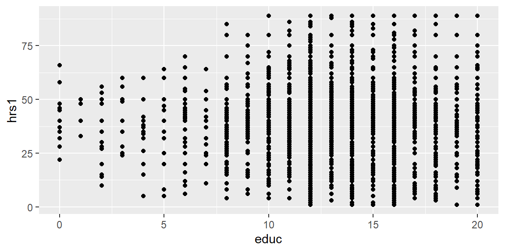
이 두 변수 간의 관계가 산포도로는 뚜렷하게 보이지는 않는 것 같습니다. 뭔가 교육시간이 증가할수록 노동시간의 변화가 커지는 거 같기는 한데… 그렇다면 둘 간의 ‘선형’ 관계를 포착하기 위해서 선형모델 방법을 이용한 추세선을 그려보겠습니다.
ggplot(data = GSScut) +
geom_point(aes(x = educ, y = hrs1)) +
geom_smooth(aes(x=educ, y=hrs1), method='lm')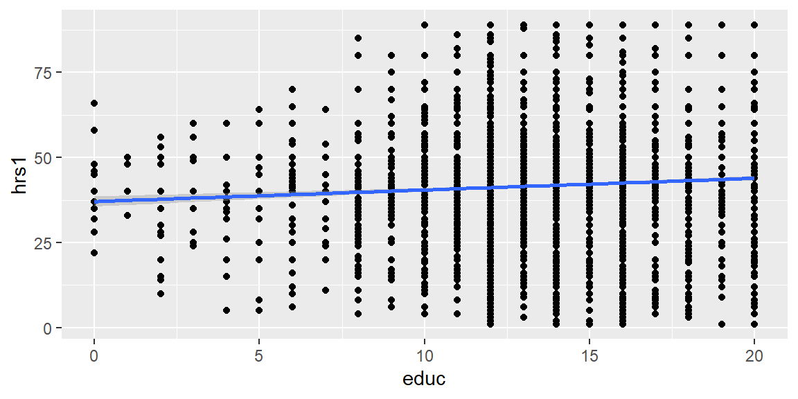
플롯을 통해 0.07이라는 크지는 않지만 두 변수 간 양적(positive, +) 상관관계가 존재한다는 것을 확인할 수 있습니다. 즉, 한 변수의 증가가 다른 변수의 증가와 연관이 있다는 것을 의미합니다.
그렇다면 이번에는 노동 시간을 종속변수(dependent variable)로 하고 교육 수준을 설명변수로 하는 단순회귀분석 모델을 만들어보겠습니다. 보통 “노동 시간에 대한 교육 수준의 단순회귀분석”을 수행한다라고 표현합니다. 이 단순선형회귀 모델은 앞서의 직선을 포함한 플롯과 같은 의미를 가진 결과를 보여줍니다.
##
## Call:
## lm(formula = hrs1 ~ educ, data = GSScut)
##
## Residuals:
## Min 1Q Median 3Q Max
## -42.931 -4.906 -1.196 7.436 48.488
##
## Coefficients:
## Estimate Std. Error t value Pr(>|t|)
## (Intercept) 37.09273 0.76265 48.636 < 2e-16 ***
## educ 0.34194 0.05375 6.362 2.11e-10 ***
## ---
## Signif. codes: 0 '***' 0.001 '**' 0.01 '*' 0.05 '.' 0.1 ' ' 1
##
## Residual standard error: 14.33 on 7695 degrees of freedom
## (5392 observations deleted due to missingness)
## Multiple R-squared: 0.005232, Adjusted R-squared: 0.005103
## F-statistic: 40.47 on 1 and 7695 DF, p-value: 2.109e-10물론 R 기본 함수로도 더 간단하게 단순선형회귀 모델의 결과를 보여줄 수 있습니다.
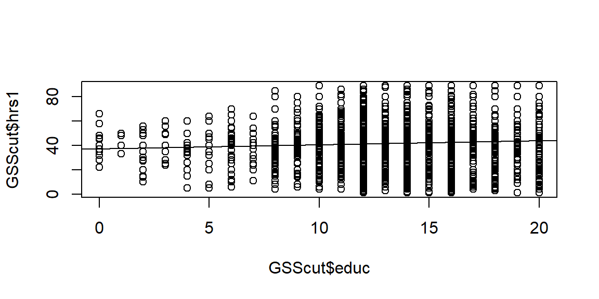
하지만 이 플롯의 경우는 단 하나의 설명변수와 종속변수의 관계를 나타날 때만 잘 작동합니다.
회귀분석모델을 이루는 주요 요소는 우리가 설명하고자 하는 종속변수, 그리고 그것을 설명하기 위한 설명변수, 마지막으로 설명하고 남은 나머지—잔차라고 할 수 있습니다.
간단히 말하면, 잔차는 모델에 적합(fit)되고 남은 나머지를 의미합니다:
Data = Fit + Residual.잔차(\(e_i\))는 관측된 실제의 개별 \(y_i\)와 모델로 예측한 값(\(\hat{y_i}\))의 차이라고 할 수 있습니다: \(e_i = y_i - \hat{y_i}\).
따라서 종속변수를 가장 잘 예측하는 선을 그리는 방법 중 하나로 우리는 이 오차들, 잔차의 값을 최대한 작게끔 하는 선을 그리는 방법을 택할 수 있습니다. 그 선을 그리는 데에는 두 가지 방법이 존재합니다.
첫째, 잔차의 절대값의 총합이 최대한 작아지는 선을 그리는 것
둘째, 잔차의 제곱합이 최소화되는 선을 그리는 것: 최소자승법(least squares)
우리는 이 중에서 둘째, 최소자승법을 사용한 회귀분석을 수행합니다. 왜 최소자승법을 사용할까요? 여기서 자세한 설명을 하기는 어렵지만 수리통계적으로 절대값과 제곱은 모두 값을 양수값으로 변환시켜주는 의미를 지니는 데 반하여(거리의 개념으로 환산. 거리에는 마이너스가 있을 수 없으니까요), 절대값은 계산이 좀 더 수학적으로 복잡하기 때문입니다. 어차피 같은 의미를 지니고 있다면 수리적으로 계산이 편리한 제곱합의 방식을 사용하는 것이 효율적입니다.
이렇게 그려지는 최소자승법에 따른 회귀선은 다음과 같은 공식으로 구현됩니다.
\[ \hat{y} = \beta_0 + \beta_1x\]
\(\hat{y}\): 모델로 예측한 종속변수 값
절편: 절편은 회귀곡선과 \(y\)축이 만나는 지점을 의미합니다.
- 모집단을 대상으로 기울기의 모수(parameter)는 \(\beta_0\)
- 표본에 대한 점추정치(point estimate)는 \(b_0\)
- 절편은 \(x\)가 0일 때, 기대되는 \(y\)의 값입니다.
기울기: 회귀분석에서 기울기는 \(b_1 = \frac{s_y}{s_x}r\)로 나타낼 수 있습니다.
- 모집단을 대상으로 기울기의 모수는 \(\beta_1\)
- 표본에 대한 점추정치는 \(\beta_1\)
- 기울기는 \(x\)의 한 단위 증가에 따른 \(y\)의 평균적인 증감을 의미합니다.
\(x\): 설명변수
우리는 선형회귀모델을 통하여 주어진 설명변수의 값에 따른 종속변수의 값을 “예측”(prediction)할 수 있습니다. 공식에 \(x\)값과 주어진 기울기, 절편값을 넣어 계산을 해서 값을 얻어내는 것입니다. 그러나 이러한 예측값은 어디까지나 주어진, 관측된 자료들만으로 구성된 모델로 만들어낸 것이기 때문에 불확실성(uncertainty)가 존재합니다. 그것이 바로 잔차(모집단의 수준에서는 오차)의 존재입니다.
또 회귀모델에서 고려해야할 것은 외삽의 문제(extrapolation)가 있습니다. 외삽의 문제는 우리에게 주어진 데이터의 값을 벗어난 범주의 값으로 모델을 예측할 때 발생합니다.
- 예를 들어, 실제 우리가 가진 관측된 설명변수의 값은 70-100 사이에 분포하는데, 회귀모델로 기울기를 얻을 경우에 우리는 설명변수의 값이 0일때, 20일때, -10일때 등의 종속변수에 대한 예측값을 구할 수 있습니다. 이때, 과연 그러한 예측값은 의미가 있을까요?
- 종종 절편이 외삽의 문제를 직관적으로 보여주고는 합니다.
- 혹은 실제 우리가 관측한 데이터가 사실은 다른 추세의 일부만을 보여주고 있을 때, 주어진 데이터로만 그린 회귀선이 실제의 관계(모집단의 관계)를 전혀 예측하지 못하는 문제가 발생할 수도 있습니다.
이번에는 우리가 만든 모델에 대해 잘 만들어졌는지, 종속변수를 기대한대로 설명변수가 잘 설명하고 있는지를 진단(diagnostics)해보겠습니다. 이를 위해서는 최소자승법에 기초한 선형회귀분석의 기본가정들, 조건들에 대해서 살펴볼 필요가 있습니다. 과연 그 조건들이 잘 충족되었는지를 확인해야 우리가 얻은 결과가 충분히 믿을만한 것이라고 볼 수 있기 때문입니다.
회귀분석의 기본가정들은 나중에 Lv.2.Statistics 자료에서 한 번 더 다룰 것이기 때문에, 일단 여기서는 간단하게 설명하도록 하겠습니다.
선형성(linearity)
- 회귀분석을 사용하기 위해서는 두 변수가 선형적인 관계, 한 변수의 증감이 다른 변수의 증감과 연계되어 있을 것이라는 가정이 필요합니다.
- 따라서 선형성을 살펴보기 위해서 앞서 우리가 했던 것처럼 산포도를 그려보고는 합니다.
잔차의 정규성(Normality of residuals)
한편, 우리는 모집단의 수준에서는 오차(error, \(\epsilon\)), 표본의 수준에서는 잔차(residuals, \(e\))가 정규분포를 띄고 있을 것이라고 가정하며, 이때 오차의 정규분포의 기대값을 0일 것이라고 가정합니다(E(\(\epsilon\)) = 0). 이는 표본의 수준에서는 잔차의 평균이 0일 것이라고 가정한다는 것을 의미합니다.
따라서 과연 잔차가 어떻게 생겨먹었는지를 보기 위해서 잔차의 플롯(residual plot)을 그려보겠습니다.
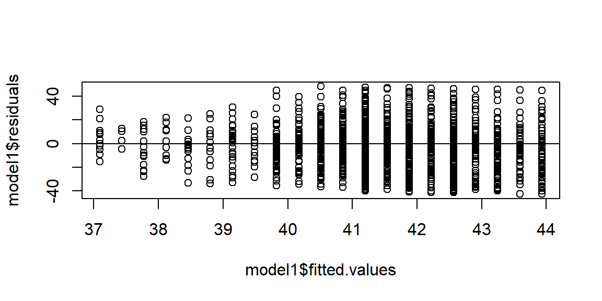
잔차를 개별 관측치에서 평균과의 차이를 표준편차로 나누어준, 즉 개별 관측치가 평균으로부터 얼마나 떨어져있는지를 보는 표준화된 잔차(standardized residuals)를 보여주겠습니다. 단위(scale)이 달라지는 거지 관계 양상이 변화하는 것은 아닙니다. 반드시 필수적인 것은 아니지만, 어떤 경우에는 유용하게 사용할 수 있습니다.
stpred1 <- (model1$fitted.values - mean(model1$fitted.values)) / sd(model1$fitted.values) stres1 <- (model1$residuals - mean(model1$residuals)) / sd(model1$residuals) plot(x = stpred1, y = stres1) abline(0,0)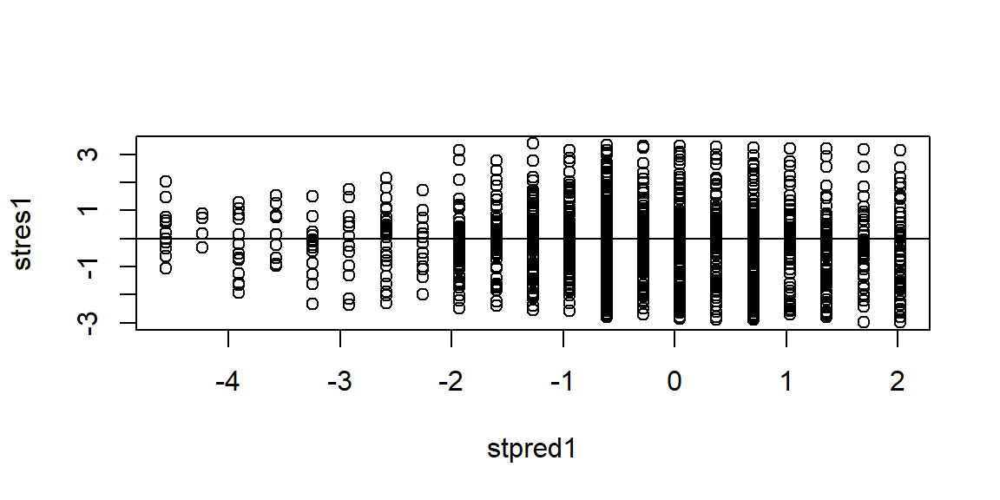
한편, 잔차의 정규성을 살펴보기 위해서 표준화된 잔차를 정규밀도(normal density)를 통해 히스토그램으로 보여주거나 QQ 플롯으로 보여줄 수 있습니다.
hist(stres1, freq = FALSE) # 이 히스토그램은 빈도보다는 비율일 때 사용합니다. curve(dnorm, add = TRUE) # 이 곡선은 표준화된 잔차에 대해서만 사용가능합니다.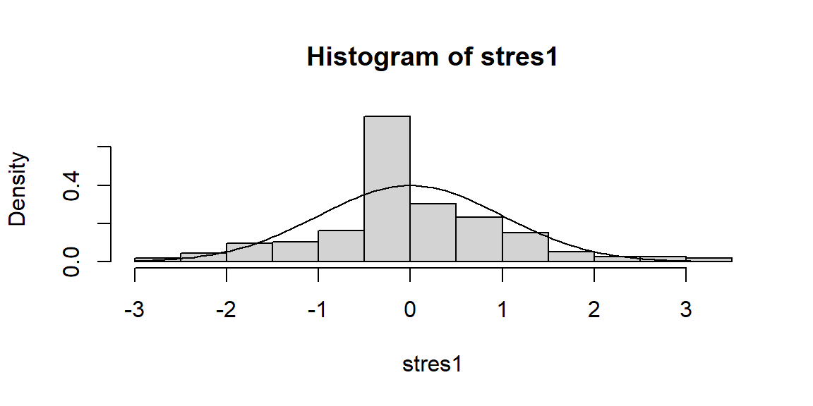
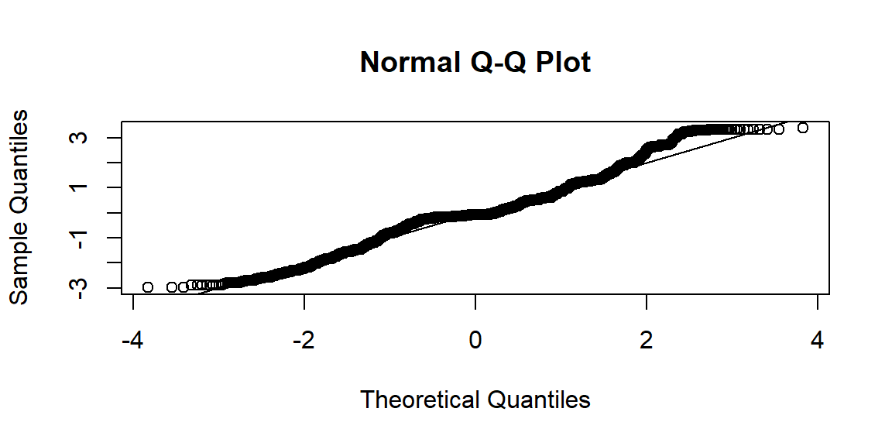
등분산성(constant variance)
최소자승법을 통해 구한 추세선 주변에 개별 관측치들이 일정하게(constant) 분포하여야 한다는 것을 의미합니다.
이것은 잔차의 변동성이 0에 수렴해야 한다는 것으로 등분산성(homoskedasticity)이라고도 표현합니다. 위에서와 마찬가지로 QQ 플롯을 통해서 확인해볼 수 있습니다 (45도선에 근사할수록 정규적이라고 볼 수 있습니다).
# install.packages("lmtest") # 등분산성을 검정하기 위한 패키지입니다. library(lmtest) # 등분산성을 검정하기 위해 Breusch-Pagan 검정을 수행하도록 하겠습니다. bptest(model1)## ## studentized Breusch-Pagan test ## ## data: model1 ## BP = 2.1288, df = 1, p-value = 0.1446브루슈-패건 검정은 등분산성을 검정하기 위한 기법으로, 영가설(\(h_0\))이 오차 간 분산이 일정할 것이다라고 설정한 뒤, 만약 그것이 기각되면(\(p < 0.05\)), 이분산성(heteroskedasticity)의 근거를 얻습니다. 전형적인 통계의 영가설 검정 방식을 취하고 있습니다.
만약 우리가 가진 데이터가 영가설을 기각, 이분산성을 가질 것이라고 추정된다면 어떻게 해야할까요? 이때에는 표준오차가 등분산성 가정이 위배됨에 따라 왜곡되었을 것으로 보고, 로버스트 표준오차로 보정하는 작업을 해줍니다.
- 이론적 근거는 나중에
Lv.2.Statistics나Lv.3.Statistics에서 선형확률모형(linear probability models)을 다룰 때 자세하게 언급하도록 하겠습니다.
- 이론적 근거는 나중에
로버스트 표준오차로 보정한 결과를 얻는 작업은 다음과 같은 패키지와 앞에서 로드했던
lmtest패키지에서 제공하는 코드로 가능합니다.# install.packages("sandwich") library(sandwich) coeftest(model1, vcov = vcovHC(model1, type = "HC1"))## ## t test of coefficients: ## ## Estimate Std. Error t value Pr(>|t|) ## (Intercept) 37.092733 0.735076 50.4611 < 2.2e-16 *** ## educ 0.341937 0.052076 6.5661 5.502e-11 *** ## --- ## Signif. codes: 0 '***' 0.001 '**' 0.01 '*' 0.05 '.' 0.1 ' ' 1
자, 이제는 이탈치(outliers)의 영향력을 살펴보도록 하겠습니다. 이탈치의 영향력을 살펴보는 것은 중요합니다.
- 이탈치란 이례적으로(극단적으로) 크거나 작은 값을 지니는 관측치를 의미합니다.
- 모델에서 구한 기울기에 큰 영향을 미치는 이탈치를 영향력 있는 관측값(influential points)이라고 부르기도 합니다.
- 왜냐하면 이탈치란 이론적으로는 우리의 일반화를 반증하는 비정상성(abnormality)를 탐지하는 계기가 될 수도 있고,
- 혹은 우리가 일반화하고자 하는 모델의 결과—계수값을 왜곡시키는 요인일 수도 있기 때문입니다.
- 이탈치란 이례적으로(극단적으로) 크거나 작은 값을 지니는 관측치를 의미합니다.
두 개의 변수만으로 돌리는 단순회귀분석에서, 예측값(fitted values)과 잔차 간의 관계를 보여주는 플롯은 이탈치를 가시적으로 보여주는 데 유용합니다.
## Cook's distance라는 플롯을 그려보겠습니다. cooksd <- cooks.distance(model1) # 먼저 cooks.distance라는 함수로 앞서 분석한 ## 단순회귀모델에 기초한 cooksd라는 객체를 만들어줍니다. plot(cooksd, main="Influential Obs by Cooks distance") # 보시면 아시겠지만 ## 이탈치가 모델에 영향을 미쳤는지를 보여주는 플롯입니다. abline(h = 1, col="red") # 일종의 기준선을 1로 잡아주겠습니다. text(x=1:length(cooksd)+1, y=cooksd, labels=ifelse(cooksd>1,names(cooksd),""), col="red") # 1이 넘으면 빨간 색으로 표시하게 지정해주었습니다만,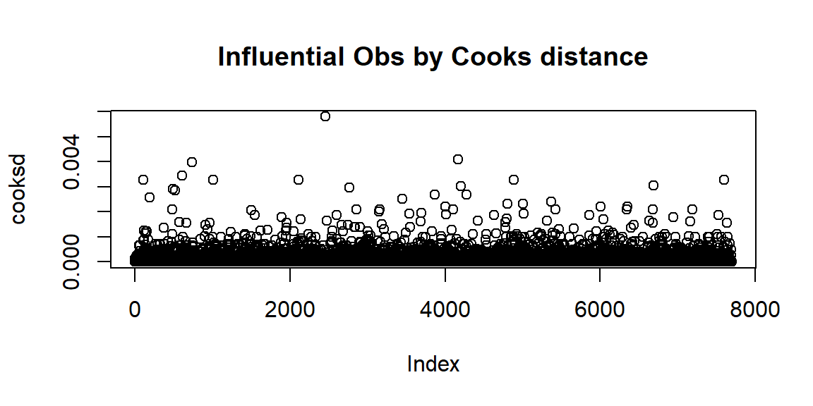
기술적으로는 Cook’s Distance는 모델에서 데이터들을 하나씩 제거해가면서 회귀분석을 반복하여 계산하여 얻어지는데, 이를 통해서 우리는 몇 번째 관측치가 제거되었을 때 회귀모델의 값이 얼만큼 달라지는지 확인할 수 있습니다.
단, 여기에서 1을 Cook’s distance의 기준치로 삼은 것은 자의적인 기준입니다. 보통 전체 관측치 수를 기준으로 \(4/n\)을 설정하고는 합니다.
# 다시 Cook's distance 플롯을 그려보겠습니다. plot(cooksd, main="Influential Obs by Cooks distance") abline(h = 4/length(cooksd), col="red") text(x=1:length(cooksd)+1, y=cooksd, labels=ifelse(cooksd>4/length(cooksd), names(cooksd),""), col="red")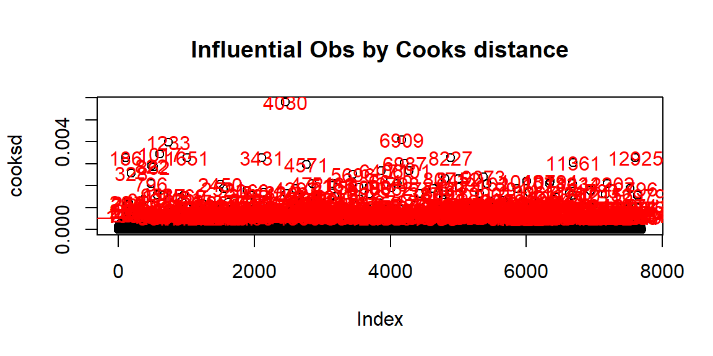
Cook’s distance 플롯을 통해 이탈치를 특정할 수 있게 되면, 그 이탈치들을 제외하고 모델을 다시 돌려볼 수 있습니다.
6.1 회귀분석의 이해: 기울기의 검정
앞에서는 주로 데이터에 기초하여 통계적 문제들을 짚어보았습니다. 이제는 과연 이렇게 모델을 통해 구한 통계치들이 과연 통계적으로 의미있는 차이를 보여주는 것인지, 혹은 변하는(varying) 값들에 따른 우연에 의한 것인지를 구분하기 위한 검정(testing)에 대해 이론적으로 살펴보고자 합니다.
먼저 우리가 기울기를 검정하고자 할 때 세우는 가설은 모두 “모집단”에 대한 것이라는 점을 잊어서는 안 됩니다. 우리가 궁금한 것은 과연 표본 그 너머의 모집단에 존재하는 관계이지, 한정된 표본에서만 관측할 수 있는 관계 양상이 아닙니다.
앞서 분석한 모델의 단순회귀분석 결과를 다시 불러와 봅시다.
term
estimate
std.error
statistic
p.value
(Intercept)
37.0105847
0.7635843
48.469544
0
educ
0.3475927
0.0538111
6.459496
0
여기서
statistics란 t-검정의 결과값으로 우리는 회귀분석의 추론을 검정하기 위해 이 통계치를 사용합니다.\(\text{t-statistics} = \frac{\text{point estimate} - \text{null value}}{\text{Standard Error}}\)
이때, 점추정(point estimate)는 \(b_1\)으로 표본을 통해 우리가 구한, 관측된 기울기를 의미합니다.
\(SE_{b1}\)은 관측된 기울기의 표준오차를 의미합니다.14
기울기와 관련된 자유도(degree of freedom)는 표본의 규모에서 변수와 절편을 제외한 \(n-2\) 입니다.
따라서 주어진 값들로 t값을 계산해보면,
대략적으로 \(\text{t-statistics} = \frac{0.3419 - 0}{0.0537} = 6.3668\) 정도라고 할 수 있습니다. 오차는 소수점 때문입니다. 간략하게 보여주기 위해서 소수점 넷째자리에서 끊었기 때문에 결과가 조금 다릅니다.
자유도는 7,695개 관측치에서 둘을 빼준 7,693이므로,
통계적 유의수준(p-value)는 \(P(|T| > 6.3668) < 0.05\)로 통계적으로 유의하다는 것을 확인할 수 있습니다. 사실 아마 0.0001 보다 작다 뭐 이정도이지 않을까 싶습니다.
통계적으로 계수값이 우연의 결과가 아니라 실제 설명변수에 의한 것일 확률이 높다는 것을 보여주기 위해서 계수값의 표준오차를 이용한 변동 구간이 0, 즉 효과없음(null effect, null value)을 포함하고 있는지 살펴볼 수도 있습니다. 그 변동구간을 우리는 신뢰구간이라고 합니다. 신뢰구간은 기울기값과 그 기울기값에 대한 t-값에 표준오차를 곱한 범위를 보여줍니다. 이 모델에서 신뢰구간은 다음과 같이 나타내줄 수 있습니다.
\[ \text{Confidence Intervals} = b_1 \pm t^{*}_{\text{df} = n-2} \times SE_{b_1}\] + 이때, 효과없음을 0으로 설정하는 것은 설명변수와 종속변수 간의 어떠한 관계도 없다는 것을 보여주기 위함입니다.
회귀분석 결과로 주어지는 \(b_1, SE_{b_1}\)는 양측꼬리 검정(two-tailed)으로 계산된 p-value 값을 보여줍니다. 즉, 기울기의 영가설은 0이라는 것을 의미합니다.
주로 변수들 간의 관계에 주목하기 때문에 절편에 대한 추론은 거의 하지 않습니다.
6.2 좀 더 복잡한 회귀분석의 이해: 다변량 회귀분석 (multivariate regression)에 들어서기
만약 우리가 남성과 여성이 노동 시간에 대해서 서로 다른 기준치를 가지고 있다고 가정한다면 어떻게 될까요? 즉, 이는 수리통계적으로는 남성과 여성이 서로 다른 절편값(intercepts)를 가지고 있다는 것을 의미하며, 실질적으로는 다른 어떠한 변수의 영향력에서 자유로울 때, 종속변수에서 남성과 여성이 차이가 있을 것이라는 것을 의미합니다. 그렇다면 두 번째 모델을 한 번 만들어보겠습니다.
##
## Call:
## lm(formula = hrs1 ~ educ + female, data = GSScut)
##
## Residuals:
## Min 1Q Median 3Q Max
## -46.204 -5.661 0.390 5.881 50.933
##
## Coefficients:
## Estimate Std. Error t value Pr(>|t|)
## (Intercept) 33.44023 0.77008 43.424 < 2e-16 ***
## educ 0.38560 0.05259 7.332 2.5e-13 ***
## female 6.05139 0.31958 18.935 < 2e-16 ***
## ---
## Signif. codes: 0 '***' 0.001 '**' 0.01 '*' 0.05 '.' 0.1 ' ' 1
##
## Residual standard error: 14.01 on 7694 degrees of freedom
## (5392 observations deleted due to missingness)
## Multiple R-squared: 0.04952, Adjusted R-squared: 0.04928
## F-statistic: 200.4 on 2 and 7694 DF, p-value: < 2.2e-16앞서의 단순회귀분석에서 산포도에 회귀선 하나를 포함할 때와는 달리, 서로 다른 두 개의 선을 그려주고자 할 때는 모델에서 서로 다른 변수 각각의 계수값을 벡터로 추출해서 사용해야 합니다.
## (Intercept) educ female
## 33.4402284 0.3856016 6.0513934plot(x = GSScut$educ, y = GSScut$hrs1)
abline(model2$coefficients[1], model2$coefficients[2] ) # 남성일 경우의 회귀선
abline((model2$coefficients[1] +
model2$coefficients[3]), model2$coefficients[2] ) # 여성일 경우의 회귀선사실 식으로 보면 까다롭지는 않습니다. 모델 2는 \(\text{Worked Hours} = \beta_0 + \beta_1(\text{Education}) + \beta_2(\text{Female}) + \epsilon\) 이라고 할 수 있습니다. 이때, 여성일 경우, 이 모델 2의 추정치는 \(\text{Worked Hours} = \beta_0 + \beta_1(\text{Education}) + \beta_2 \times 1 + \epsilon\), 남성일 경우는 \(\text{Worked Hours} = \beta_0 + \beta_1(\text{Education}) + \beta_2 \times 0 + \epsilon\)입니다. 선형회귀분석에서 기울기를 구하는 방법 중 하나는 편미분(partial derivatives, \(\partial\))을 하는 것입니다.
여성일 경우: \(\frac{\partial(\text{Worked Hours})}{\partial(\text{Female})} = \beta_0 + \beta_2\)로 절편을 구할 수 있습니다.
반면, 남성일 경우: \(\frac{\partial(\text{Worked Hours})}{\partial(\text{Male})} = \beta_0\)이 됩니다. 남성의 대표값은 0이기 때문입니다.
이때, 두 회귀선은 평행(parellel)한 기울기를 가집니다. 절편값(\((\beta_0 + \beta_2) - \beta_0 = \beta_2\)만 달라지는 것입니다.
모델 2는 성별에 따라서 교육 연수의 효과가 동일할 것(비조건적일 것)이라고 가정하지만 여성의 경우 남성일 때와는 다른 기준치를 가진다고 봅니다.
그렇다면 만약 남성과 여성일 때 각각 서로 다른 기울기를 갖는다고, 즉 교육 연수가 성별에 따라 서로 다른 효과를 가진다고 생각해보면 어떻게 될까요? 선형모델 함수와 ggplot2 패키지를 이용해서 한 번 그려보겠습니다.
ggplot(data = GSScut) +
geom_point(aes(x = educ, y = hrs1, color = as.factor(female))) +
geom_smooth(aes(x = educ, y = hrs1, color = as.factor(female)), method = "lm")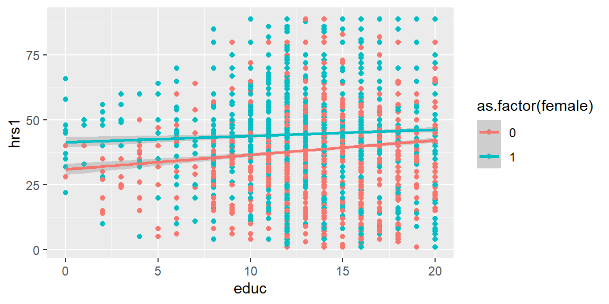
위의 플롯은 교육 연수가 노동 시간에 미치는 효과가 성별에 따라 “조건적”일 것이라는 것을 가정하고 분석한 것이다. 회귀식으로 모델을 재구성하면 다음과 같다.
##
## Call:
## lm(formula = hrs1 ~ educ * female, data = GSScut)
##
## Residuals:
## Min 1Q Median 3Q Max
## -45.319 -5.341 0.035 5.663 51.286
##
## Coefficients:
## Estimate Std. Error t value Pr(>|t|)
## (Intercept) 30.95939 1.12811 27.444 < 2e-16 ***
## educ 0.56288 0.07897 7.128 1.11e-12 ***
## female 10.46820 1.50271 6.966 3.52e-12 ***
## educ:female -0.31830 0.10582 -3.008 0.00264 **
## ---
## Signif. codes: 0 '***' 0.001 '**' 0.01 '*' 0.05 '.' 0.1 ' ' 1
##
## Residual standard error: 14 on 7693 degrees of freedom
## (5392 observations deleted due to missingness)
## Multiple R-squared: 0.05064, Adjusted R-squared: 0.05027
## F-statistic: 136.8 on 3 and 7693 DF, p-value: < 2.2e-16이와 같이 두 설명변수 간의 상호작용항(interaction terms)는 설명변수 간 종속변수에 대한 조건적 효과를 분석하는 데 도움을 주지만, 해석에 주의를 요합니다.
다음과 같은 회귀모델을 가정해봅시다: \(\text{Worked Hours} = \beta_0 + \beta_1(\text{Education}) + \beta_2(\text{Female}) + \beta_3(\text{Education} \times \text{Female}) + \epsilon\).
이때, 한계효과(marginal effects)는 설명변수 \(x_i\)에 대한 기울기(\(\beta_i\))의 도함수로 나타낼 수 있습니다. 아까 위에서 간략하게 살펴본 편미분을 의미합니다.
교육 연수의 한계효과 = \(\beta_1 + \text{Female} \times \beta_3\)
여성의 한계효과 = \(\beta_2 + \text{Education} \times \beta_3\)
남성일 때(
Female = 0) 기울기와 절편은 \(\beta_1\)과 \(\beta_0\)으로 나타낼 수 있습니다. 여성일 때(Female = 1)의 기울기와 절편은 \(\beta_1 + \beta_3\)과 \(\beta_0 + \beta_2\)로 나타낼 수 있습니다.
모델 3의 계수값을 분석해보겠습니다.
## (Intercept) educ female educ:female ## 30.9593917 0.5628771 10.4681951 -0.3183006plot(x = GSScut$educ, y = GSScut$hrs1) ## abline 함수는 abline(절편값, 기울기값)으로 설정해줄 수 있습니다; abline(model3$coefficients[1], model3$coefficients[2]) abline((model3$coefficients[1] + model3$coefficients[3]), (model3$coefficients[2] + model3$coefficients[4]))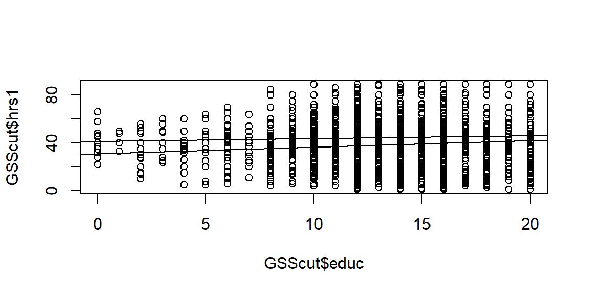
교육 연수가 0일 때, 남성과 여성의 노동 시간의 차이는 얼마일까요? 교육 연수가 20일 때는 어떤 차이가 나타날까요? 교육 연수가 증가할수록 성별의 효과가 평준화된다고 가정하는 것이 맞을까요? 아니면 교육 연수와 성별, 노동 시간에 영향을 미치는 다른 변수들이 존재할까요? 잠재적인 탈허위적 상관관계(spurious correlations)에 대해 생각해볼 필요가 있습니다.
6.3 단순회귀분석 심화
이번에는 Quality of Government 데이터셋의 교차사례 데이터를 이용해 단순회귀분석을 수행, 그 결과표가 보여주는 개별 통계치들의 의미를 살펴보겠습니다. 단, 심화의 이론적 배경 등은 나중에 Lv.2.Statistics에서 자세하게 논의할 것입니다. 여기에서는 R의 기본 함수들로도 원리를 이해하면 패키지 없이 해당 통계치들을 계산해낼 수 있다는 것을 보여주고가 합니다.
예제 데이터 QOG는 194개 국가의 2015년을 기준으로 약 1983개의 변수들을 포함하고 있는 변수입니다. 우리는 이 중에서 부패지수(ti_cpi)와 세계화 지수(dr_ig)를 사용하여 단순회귀분석을 수행할 것입니다. 먼저, QOG에서 필요한 변수만을 선택하여 서브셋을 만들어보겠습니다.
서브셋, QOGcut에서 사용할 변수들의 간략한 기술통계(descriptive statistics)를 살펴보도록 하겠습니다.
| ti_cpi | dr_ig | |
|---|---|---|
| Min. : 8.00 | Min. :28.68 | |
| 1st Qu.:28.00 | 1st Qu.:50.49 | |
| Median :38.00 | Median :59.93 | |
| Mean :42.97 | Mean :61.13 | |
| 3rd Qu.:55.75 | 3rd Qu.:70.90 | |
| Max. :91.00 | Max. :90.47 | |
| NA’s :16 | NA’s :10 |
현재 부패지수는 최대값이 100으로, 높을수록 ’청렴하다는 것’을 의미합니다. 따라서 더 큰 값이 더 높은 수준의 부패를 보여주도록 다시 코딩해보도록 하겠습니다.
이렇게 다시 코딩한 부패지수(corrupt)를 포함하여 모델 분석에 사용할 변수들을 다시 한 번 살펴보겠습니다.
| corrupt | dr_ig | |
|---|---|---|
| Min. : 9.00 | Min. :28.68 | |
| 1st Qu.:44.25 | 1st Qu.:50.49 | |
| Median :62.00 | Median :59.93 | |
| Mean :57.03 | Mean :61.13 | |
| 3rd Qu.:72.00 | 3rd Qu.:70.90 | |
| Max. :92.00 | Max. :90.47 | |
| NA’s :16 | NA’s :10 |
세계화 지수를 종속변수로, 부패지수를 설명변수로 하는 단순회귀분석을 수행해보겠습니다.
##
## Call:
## lm(formula = dr_ig ~ corrupt, data = QOGcut)
##
## Residuals:
## Min 1Q Median 3Q Max
## -32.831 -6.497 0.015 6.788 20.030
##
## Coefficients:
## Estimate Std. Error t value Pr(>|t|)
## (Intercept) 92.90546 2.19976 42.23 <2e-16 ***
## corrupt -0.54974 0.03676 -14.96 <2e-16 ***
## ---
## Signif. codes: 0 '***' 0.001 '**' 0.01 '*' 0.05 '.' 0.1 ' ' 1
##
## Residual standard error: 9.458 on 172 degrees of freedom
## (20 observations deleted due to missingness)
## Multiple R-squared: 0.5653, Adjusted R-squared: 0.5628
## F-statistic: 223.7 on 1 and 172 DF, p-value: < 2.2e-16이같은 결과는 R에서 제공되는 패키지 이외에도 수리통계적 식을 매뉴얼대로 구성하여 재현할 수도 있습니다. 먼저, 관측치 중 변수에서 결측치가 있으면 해당 관측치 전체는 회귀모형에서 제외됩니다. 새로운 데이터셋(temp.data)로 수리통계적 재현을 수행해보도록 하겠습니다.
결측치가 존재하지 않는 새로운 데이터셋의 변수들로 OLS 회귀분석의 계수들을 구해보겠습니다. 우리가 추정하고자 하는 회귀식은 \(\text{Index of Globalization} = \beta_0 + \beta_1(\text{Corrupt Index}) + \epsilon\)이라고 할 수 있습니다.
그리고 회귀식에서 기울기를 구하는 공식인 \(\beta_1 = \frac{\sigma_y}{\sigma_x} \times cov(y, x)\)라고 할 때,
라고 표현할 수 있습니다. 표본 자료를 사용하여 컴파일하는 것이기 때문에 \(\beta\)가 아니라 표본의 통계치인 \(b\)로 객체를 저장해주었습니다.
OLS는 행렬대수의 형태, \((X'X)^{-1}X'y)\)로 나타낼 수 있습니다. 이렇게 만들어진 \(x\)의 벡터의 맨 앞에 1일 더하여 절편을 나타냅니다. 다른 행렬값들은 변수에 따라 달라지지만, 절편은 상수(constant), 변하지 않는 값이기 때문입니다.
이 \(x\)의 행렬을 이용하여 우리는 기울기의 벡터값을 얻을 수 있습니다.
기울기와 절편을 구했으니, 주어진 \(x\)값과 기울기, 절편을 이용하여 종속변수의 예측값(predicted values, fitted values)을 구할 수도 있습니다. 예측값은 \(\hat{y}\)으로 나타냅니다.15
예측값을 구했으니, 과연 예측값과 실제값이 얼마나 차이나는지 플롯을 그려보겠습니다.
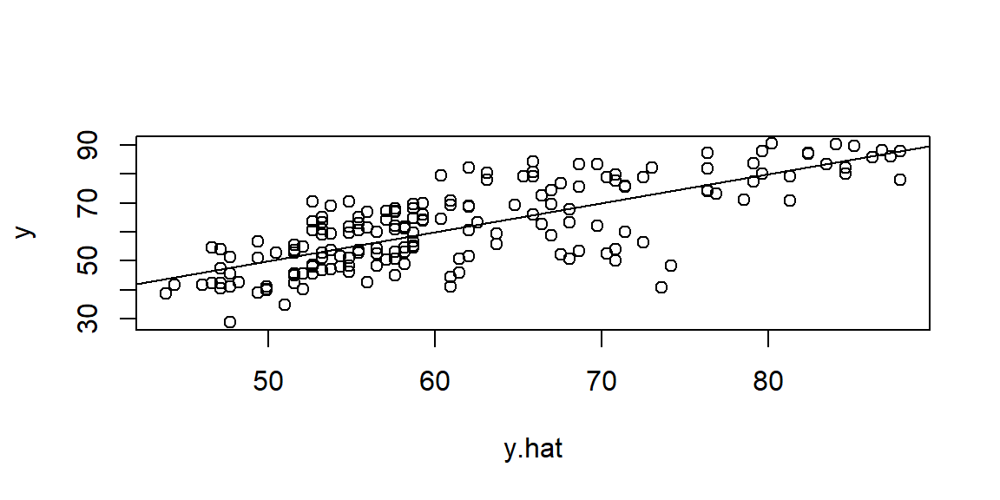
예측값과 실제값 간의 차이, 오차를 우리는 표본 수준에서 잔차(residuals)라고 한다고 앞에서 이미 언급한 바가 있습니다. 잔차를 구해보겠습니다.
과연 이 잔차는 회귀분석의 가정에 따라 평균이 0인 정규분포를 이루고 있을까요? 혹은, 이에 근사할까요?
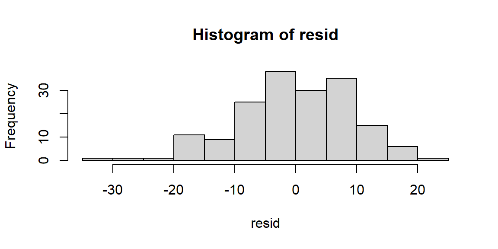
## [1] 7.812197e-16또 다른 가정에 따르면 잔차는 설명변수와 종속변수에에 독립적이어야 합니다. 과연 이 모델에서 잔차와 설명변수, 잔차와 종속변수는 상관성이 있을까요?
## resid x
## resid 1.00000e+00 1.43717e-16
## x 1.43717e-16 1.00000e+00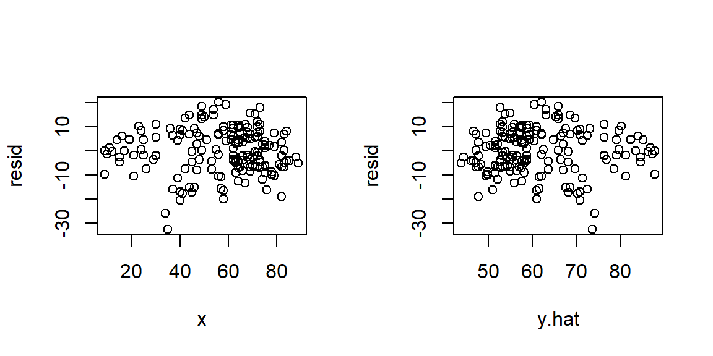
플롯을 보면 잔차는 모델에 포함된 변수들과는 큰 상관성을 보이지 않는 것 같습니다. 그렇다면 이번에는 모델의 설명력을 보여주는 \(R^2\) 값을 계산해보도록 하겠습니다. \(R^2\)는 두 가지 방식으로 계산할 수 있습니다. \(R^2\)는 전체 종속변수의 변동량(total sum of squares) 중 설명이 되는 변동량(explained sum of squared)이 차지하는 비율을 보여줍니다.
첫째, 단순회귀분석에서는 말 그대로 상관계수, \(R\)을 제곱하여 구할 수 있습니다.
## [1] 0.5697705둘째, 회귀선을 통해 설명하는 것이 아무 정보도 없을 때 평균을 통해 예측하는 것에 비하여 얼마나 더 나은 설명력을 제공하는지로 보여줄 수 있습니다.
SSE <- sum((y.hat - mean(y))^2) # 예측값과 평균값의 차이의 제곱합 SSR <- sum((y - y.hat)^2) # 실제값과 예측값의 차이의 제곱합(잔차의 제곱합) R2 <- SSE / (SSE + SSR) # 모델로 예측했을 때와 평균으로 예측했을 때의 차이를 ## 전체 변동량 대비 비율로 표현합니다. R2## [1] 0.5697705\(R^2\)는 변수의 개수에 따라 조정됩니다. 왜냐하면 어떠한 변수든 간에 통계적으로 모델에 추가되면, \(R^2\)는 증가하기 때문입니다. 따라서 우리는 과연 그것이 유의미한 변수의 추가로 인한 모델의 설명력 증가인지, 단순히 변수 추가투입에 따른 \(R^2\) 증가인지 살펴보기 위해 조정된 \(R^2\)를 구하고는 합니다.
조정된 \(R^2\)는 \(\frac{n-1}{n-k}\)로 가중치가 부여됩니다.
모델을 통해 예측하는 것이 평균(대표값)이나 다른 방법으로 추세를 예측하는 것에 비해 더 많은 정보를 준다는 것을 보여주는 또 하나의 통계치는 F-검정치입니다. 마찬가지로 설명되지 않은 변동량에 비해 설명된 변동량을 보여주는 통계치입니다. 수리통계적으로는 잔차의 제곱합(\(SSR / (n-k)\)에 대한 모델로 설명되는 변동량의 제곱합(\(SSE / k\))으로 계산할 수 있습니다.
이렇게 구한 F값이 과연 통계적으로 유의미한지, 유의수준을 계산해보도록 하겠습니다.
## [1] 0잔차의 표준편차와 종속변수의 표준편차를 비교해보겠습니다. 잔차의 표준편차는 모델로 설명되고 남은 나머지 변동량을 보여주며, 종속변수의 표준편차는 설명변수로 설명되기 이전의 종속변수의 변동량을 보여줍니다. 설명변수가 종속변수의 변이를 설명하여 잔차의 표준편차가 감소한 것을 확인할 수 있습니다.
## [1] 9.411872## [1] 14.30737이제는 각 계수값에 대한 t검정을 수행해보도록 하겠습니다 먼저 1이 포함된 \(x\), 설명변수 행렬을 이용하여 공분산행렬(variance-covariance matrix)을 계산합니다.
## x
## 4.79281101 -0.075692250
## x -0.07569225 0.001338385각 계수값의 표준오차는 이 공분산의 제곱근으로 계산할 수 있습니다.
SE.b0 <- sqrt(vcov[1,1])
SE.b1 <- sqrt(vcov[2,2])
## 이제 계수값에 대한 t검정을 수행해보겠습니다.
t.b0 <- (b0 - 0) / SE.b0
1 - pt(t.b0, df = n - k - 1)## [1] 0## [1] 1.929361e-33t검정의 의미는 간단합니다. 우리가 모델을 통해 구한 기울기가 과연 실제 설명변수의 효과로 인한 것인지 아니면 단지 설명변수의 변동에 의한 우연의 일치인지를 구분하고자 하는 것입니다.
이렇게 구한 결과를 lm() 함수의 결과와 비교해보겠습니다.
##
## Call:
## lm(formula = dr_ig ~ corrupt, data = QOGcut)
##
## Residuals:
## Min 1Q Median 3Q Max
## -32.831 -6.497 0.015 6.788 20.030
##
## Coefficients:
## Estimate Std. Error t value Pr(>|t|)
## (Intercept) 92.90546 2.19976 42.23 <2e-16 ***
## corrupt -0.54974 0.03676 -14.96 <2e-16 ***
## ---
## Signif. codes: 0 '***' 0.001 '**' 0.01 '*' 0.05 '.' 0.1 ' ' 1
##
## Residual standard error: 9.458 on 172 degrees of freedom
## (20 observations deleted due to missingness)
## Multiple R-squared: 0.5653, Adjusted R-squared: 0.5628
## F-statistic: 223.7 on 1 and 172 DF, p-value: < 2.2e-16manual <- as_tibble(bind_cols(
Term = c("(Intercept)", "Corrupt"),
Estimate = c(b0, b1),
Std.Error = c(SE.b0, SE.b1),
R.sq = c(R2, NA),
F = c(F, NA)))
manual %>% knitr::kable()| Term | Estimate | Std.Error | R.sq | F |
|---|---|---|---|---|
| (Intercept) | 92.8618773 | 2.1892490 | 0.5697705 | 226.4623 |
| Corrupt | -0.5505395 | 0.0365839 | NA | NA |
거의 유사한 결과를 얻을 수 있습니다. 약간의 차이는 R 내부에서 계산할 때 사용되는 공식의 미세한 수리적 차이 때문이라고 이해하실 수 있을 것 같습니다.
표준오차의 개념이 조금 헷갈릴 수 있습니다. 간단하게 설명하자면, 우리가 하나의 표본을 가지로 기울기, 절편 등을 구하지만 그것이 결코 모집단의 것과 같다고 우리는 확신할 수 없습니다. 왜냐하면 모집단에서 수많은 표본들을 뽑을 수 있지만 현실의 제약으로 우리는 단 하나만을 뽑아서 그것의 결과를 확인한 것이기 때문입니다. 따라서 이론적으로는 백만개의 표본을 뽑을 수 있다고 하면, 우리는 백만개의 기울기, 절편을 얻을 수 있을 것입니다. 이때, 이 백만개의 기울기와 절편도 분포의 형태로 나타낼 수 있을 텐데, 그 기울기와 절편들의 분포의 표준편차를 표준오차라고 부릅니다. 즉, 본질적으로 오차가 존재할 수밖에 없는 표집(sampling)의 변동성을 포착하는 통계치라고 할 수 있습니다.↩︎
참고로 평균은 \(\bar{y}\)로 나타냅니다.↩︎